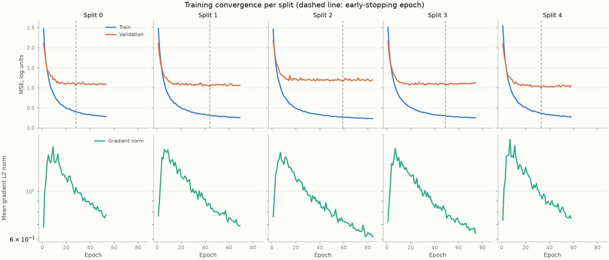
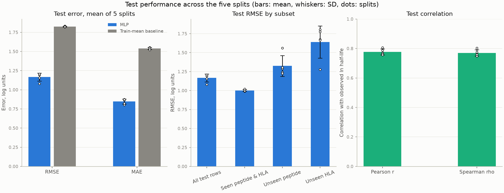
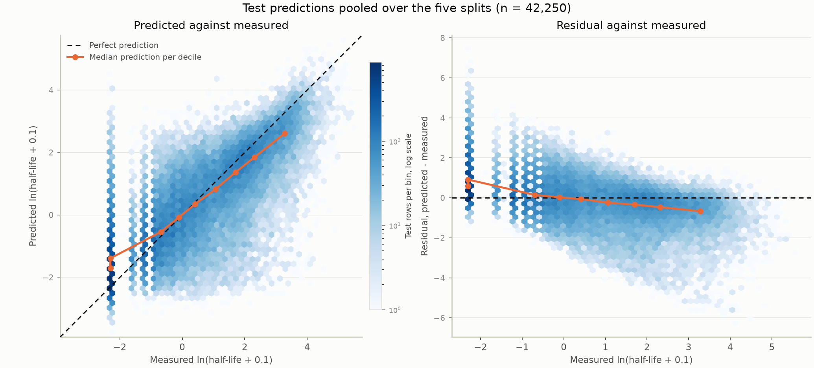

A fully connected network regresses the logarithm of complex half-life from the stacked peptide and HLA pseudosequence. Trained independently on five constrained splits, it reaches a test RMSE of 1.17 ± 0.05 log units and a Spearman correlation of 0.770 ± 0.021, against 1.83 for a train-mean baseline. Error grows from 1.00 on test rows whose peptide and HLA both appear in training to 1.64 on rows carrying an HLA the model has never seen. The log offset ε was chosen by experiment (section 9): at 0.1 it improves rank correlation on all five splits relative to the 0.001 used initially.
The source is DATA/rasmussen_et_al_dataset.xlsx, 28,166 measured
peptide-HLA complexes with columns allele, peptide (9 residues),
thalf_hours, hla_seq (182 residues) and
hla_pseudoseq (34 residues). It contains 5,002-8,751 distinct peptides
depending on the split and only 74 distinct HLA pseudosequences.
Five train/test splits were produced beforehand by split_dataset.py and
stored as NumPy archives. Each split is an independent 70/30 partition of all rows,
constrained so that (i) at least 5 HLA sequences and 100 peptides occur only in the test
set, and (ii) the train and test means of ln(x) and
ln(x)² differ by at most 0.05 and 0.10. All five splits met
both moment constraints on their first seed. They are not cross-validation folds: the
holdouts are drawn independently, so test sets overlap between splits.
| Partition | Rows | Share | Role |
|---|---|---|---|
| Training | 17,744 | 63.0% | Gradient steps |
| Validation | 1,972 | 7.0% | Early stopping only |
| Testing | 8,450 | 30.0% | Final scoring only |
| Total | 28,166 | 100% |
The validation set was not part of the original splits; it is carved out of each
training set inside the training script, by a seeded random permutation of rows
(--validation-fraction 0.1). Its only use is to decide when to stop and
which weights to keep. The test sets are read once, after training ends.
Each example is the peptide stacked with the HLA pseudosequence, one-hot encoded:
This gives (9 + 34) × 20 = 860 binary input features. The encoding carries no notion of residue similarity: leucine and isoleucine are as unrelated as leucine and aspartate. A BLOSUM62 encoding, which would supply that similarity at the same input width, is the natural next experiment (section 10).
Half-lives span 0 to 256.7 hours, are strongly right-skewed (median 0.3 h among the non-zero values), and 5,679 rows — 20% of the dataset — are exactly zero. Regressing the raw value under a squared-error loss would let a handful of long-lived complexes dominate the gradient.
The model therefore predicts
y = ln(thalf_hours + ε), ε = 0.1
Adding ε inside the logarithm is the regularization of the singularity at zero:
it is smooth and monotone over the whole range, unlike clamping, and it keeps the 20% of
zero rows at a single finite value, ln(0.1) ≈ −2.30. It is exposed as
--epsilon.
The value 0.1 h is the reporting resolution of the assay — half-lives are given to one decimal — so it encodes the statement that the data cannot distinguish a zero from any value below the detection limit. Section 9 reports the experiment behind the choice: an earlier draft of this work used ε = 0.001, which placed the zero rows 4.6 log units below a typical 0.1 h measurement and let them dominate the loss.
Targets are then standardized with the training mean and standard deviation of each split, which conditions the optimization; predictions are mapped back before scoring, so every error in this report is in natural-log units of hours.
A fully connected feed-forward network, ReLU activations, dropout after each hidden layer, single linear output. Three weight layers in total: two hidden, one output.
| # | Layer | Units in | Units out | Activation | Parameters |
|---|---|---|---|---|---|
| — | Input (one-hot) | — | 860 | — | 0 |
| 1 | Linear + ReLU + Dropout 0.2 | 860 | 256 | ReLU | 220,416 |
| 2 | Linear + ReLU + Dropout 0.2 | 256 | 128 | ReLU | 32,896 |
| 3 | Linear (output) | 128 | 1 | identity | 129 |
| Total trainable | 253,441 |
The widths are set by --hidden 256 128 and were not tuned; they are a
deliberate baseline. The parameter count is about 14 times smaller than the 3.55 million
distinct (peptide, HLA) pairs the training rows could in principle encode, but still large
relative to 17,744 training rows, which is why the regularization below matters.
Four regularizing mechanisms act together; the first is about the target, the other three about the weights.
| Setting | Value | Setting | Value |
|---|---|---|---|
| Optimizer | Adam | Loss | MSE on standardized target |
| Learning rate | 1×10−3 | Batch size | 256 |
| Weight decay | 1×10−5 | Max epochs | 300 |
| Dropout | 0.2 | Patience | 25 epochs |
| Target ε | 0.1 h | Target scaling | Train mean and SD |
| Seed (split i) | 0 + i | Device | CPU |
No learning-rate schedule and no gradient clipping are used; the gradient norm is measured each step but left unmodified. Each split trains in 4-12 seconds on CPU, and runs are reproducible given the seed.
Figure 1 shows, per split, the training and validation MSE in log units and the mean gradient L2 norm per epoch on a logarithmic axis. All five runs converge in the same way: the gradient norm rises over the first ~10 epochs as the weights leave their initialization, then decays monotonically; training loss flattens; validation loss reaches a plateau near 1.0-1.2 and then drifts upward as the network begins to overfit, which is where early stopping intervenes.

| Split | Epochs run | Best epoch | Peak grad. norm | Final grad. norm | Best val. MSE | Time (s) |
|---|---|---|---|---|---|---|
| 0 | 53 | 28 | 1.61 | 0.78 | 1.07 | 5.3 |
| 1 | 69 | 44 | 1.56 | 0.69 | 1.04 | 6.1 |
| 2 | 84 | 59 | 1.52 | 0.61 | 1.16 | 7.3 |
| 3 | 74 | 49 | 1.58 | 0.64 | 1.07 | 7.0 |
| 4 | 58 | 33 | 1.74 | 0.75 | 1.01 | 5.3 |
The five runs are closely matched: 53-84 epochs, best weights at epoch 28-59, and best validation MSE within 1.01-1.16. The gradient norm plateaus rather than reaching zero, which is expected: dropout and mini-batch sampling keep a stochastic floor under it, so the diagnostic of convergence is the decay and flattening, not a vanishing value.
Each model is scored once on its own test set, after early stopping. Figure 2 and Table 5 report the mean over the five splits with the standard deviation as the error bar; individual splits are plotted as dots. The reference is a predictor that always returns the training mean, which isolates how much the sequences actually contribute.

| Metric | Split 0 | Split 1 | Split 2 | Split 3 | Split 4 | Mean ± SD |
|---|---|---|---|---|---|---|
| RMSE | 1.080 | 1.194 | 1.194 | 1.207 | 1.157 | 1.166 ± 0.052 |
| MAE | 0.802 | 0.863 | 0.875 | 0.873 | 0.822 | 0.847 ± 0.033 |
| Bias | 0.049 | −0.208 | −0.010 | 0.008 | −0.079 | −0.048 ± 0.101 |
| Pearson r | 0.807 | 0.769 | 0.764 | 0.756 | 0.787 | 0.777 ± 0.020 |
| Spearman ρ | 0.803 | 0.764 | 0.759 | 0.748 | 0.776 | 0.770 ± 0.021 |
| Baseline RMSE | 1.820 | 1.832 | 1.830 | 1.822 | 1.821 | 1.825 ± 0.006 |
The model cuts RMSE by 36% relative to the baseline and ranks complexes with ρ = 0.77, so the stacked sequences carry substantial signal. Mean bias is near zero and varies little by split (−0.21 to +0.05), so there is no systematic offset; the calibration problem is conditional rather than global, as section 8 shows.
Test rows are grouped by whether their peptide and HLA pseudosequence were present anywhere in the training set. This is the comparison the constrained splits were designed to support.
| Subset | Rows per split | RMSE, mean ± SD | vs. seen |
|---|---|---|---|
| Seen peptide and HLA | 5,695-6,389 | 1.001 ± 0.012 | — |
| Unseen peptide | 963-1,271 | 1.325 ± 0.137 | +32% |
| Unseen HLA | 1,126-1,837 | 1.640 ± 0.211 | +64% |
| All test rows | 8,450 | 1.166 ± 0.052 | +16% |
Two results stand out. Generalization to unseen peptides costs 32% RMSE: with thousands of distinct 9-mers in training, the network learns position-wise peptide chemistry that transfers, if imperfectly. Generalization to unseen HLAs costs 64% and reaches 1.80 in the worst split, approaching the 1.83 of a model that ignores the sequences entirely. Performance on seen combinations is by contrast remarkably stable, RMSE 1.001 ± 0.012 across splits, so nearly all the split-to-split variation in the headline number comes from which alleles were withheld.
Figure 3 plots every test prediction against its measurement, pooled over the five splits. The vertical stripes at the left are the discreteness of the assay: half-lives are reported to one decimal, so the measured axis has few distinct values there, the leftmost being the zero rows at ln(0.1).

The cloud follows the diagonal but is visibly flatter than it, which is the signature of regression to the mean under a squared-error loss: the model compresses its predictions toward the centre of the distribution. The median prediction per decile sits above equality at the low end and below it at the high end, crossing near the middle of the range.
| Measured half-life | % of test rows | % of squared error | RMSE | Mean signed error |
|---|---|---|---|---|
| = 0 h | 20.1 | 24.7 ± 6.5 | 1.282 | +0.847 |
| (0, 0.5] h | 17.9 | 12.4 ± 1.6 | 0.969 | +0.300 |
| (0.5, 2] h | 22.5 | 17.5 ± 2.2 | 1.026 | −0.036 |
| (2, 8] h | 21.0 | 20.9 ± 1.7 | 1.166 | −0.510 |
| > 8 h | 18.5 | 24.5 ± 6.9 | 1.336 | −0.846 |
Error is distributed far more evenly across the range than under the earlier ε = 0.001, where the zero rows alone produced 47% of the squared error. What remains is a U shape: the two extremes of the distribution are hardest, and the signed errors confirm the shrinkage — zero-stability complexes are predicted too stable by +0.85 log units, complexes above 8 h too unstable by −0.85, with the crossover in the (0.5, 2] stratum.
Thresholding the regression turns signed error into false positives (predicted stable, measured unstable) and false negatives. Which error dominates depends entirely on where the threshold is placed.
| Threshold | False positives | False negatives | FP rate | FN rate | Precision | Recall |
|---|---|---|---|---|---|---|
| > 0.5 h | 837 | 804 | 26.1% | 15.4% | 0.842 | 0.846 |
| > 1 h | 848 | 823 | 20.2% | 19.4% | 0.802 | 0.806 |
| > 2 h | 707 | 801 | 13.8% | 24.1% | 0.783 | 0.759 |
At a 1-hour threshold the two error types are balanced. Below it false positives dominate, as the over-predicted zero and near-zero rows cross the line; above it false negatives dominate, as shrinkage pulls genuinely stable complexes below it. Screening for strongly stable complexes (> 2 h) therefore loses about a quarter of them, which is the practical cost of the shrinkage and the main target for future work.
ε is not a free parameter: it decides how far the 20% of zero-stability rows sit below the measurable ones, and therefore how much of the loss they absorb. Four values were trained on all five splits with every other setting fixed.
Comparison is not straightforward, because ε changes the units of the target and so rescales RMSE directly — raw RMSE falls from 2.42 to 0.64 across this sweep almost entirely by rescaling. Two transform-independent measures are used instead: Spearman correlation, invariant under any monotone transform, and an RMSE computed after mapping every model's predictions back to hours and into one fixed space, ln(t + 0.1).
| ε | Spearman ρ | RMSE, common space | FN rate > 2 h | FP rate > 2 h | Median prediction at t = 0 |
|---|---|---|---|---|---|
| 0.001 | 0.742 ± 0.015 | 1.292 ± 0.046 | 27.5% | 14.7% | 0.007 h |
| 0.01 | 0.756 ± 0.025 | 1.224 ± 0.064 | 28.0% | 12.6% | 0.025 h |
| 0.1 (adopted) | 0.770 ± 0.021 | 1.164 ± 0.052 | 24.1% | 13.9% | 0.083 h |
| 1.0 | 0.769 ± 0.020 | 1.155 ± 0.050 | 23.5% | 14.0% | 0.187 h |
The splits are paired, so per-split differences carry more information than the standard deviations. Against ε = 0.001, both 0.1 and 1.0 improve Spearman on all five splits (+0.028 on average), improve common-space RMSE on all five (−0.13), and reduce the > 2 h false-negative rate on all five (−3.4 and −4.0 points). The mechanism is the one Table 7 makes explicit: with a larger ε the zero rows stop monopolising the loss and the network spends its capacity on the measurable range.
Between 0.1 and 1.0 there is nothing to choose statistically — the differences are well inside the split-to-split spread. 0.1 was adopted on two grounds beyond the metrics:
cd peptide-HLA-stability .venv/bin/python split_dataset.py DATA/rasmussen_et_al_dataset.xlsx --thresholds 0.05 0.1 .venv/bin/python train_mlp.py --splits-dir DATA --output-dir RESULTS .venv/bin/python analyze_errors.py --splits-dir DATA --results-dir RESULTS
Figures 1 and 2 and metrics.json come from the second command,
Figure 3 and the error decomposition from the third. ε = 0.1 is the default; the
sweep in section 9 is reproduced by passing --epsilon and a separate output
directory.
| Path | Contents |
|---|---|
| DATA/training_i.npz, testing_i.npz | The five splits, i = 0…4, one array per column |
| DATA/split/ | Splitting script's own workbooks, metadata and log-distribution plots |
| RESULTS/mlp_split_i.pt | Restored best weights plus the target transform constants |
| RESULTS/metrics.json | Full configuration, per-epoch histories and every metric in this report |
| RESULTS/convergence.png, test_error.png | Figures 1 and 2 |
| RESULTS/predicted_vs_true.png | Figure 3 |
| RESULTS/error_decomposition.png, .json | Strata and stability calls behind Tables 7 and 8 |
Environment: Python 3.14.2, PyTorch 2.14.1, NumPy 2.5.3, pandas 3.0.6, Matplotlib 3.11.2, CPU only. Seeds are fixed (split i uses seed i for the validation draw, weight initialization and batch order), so the numbers above reproduce exactly.